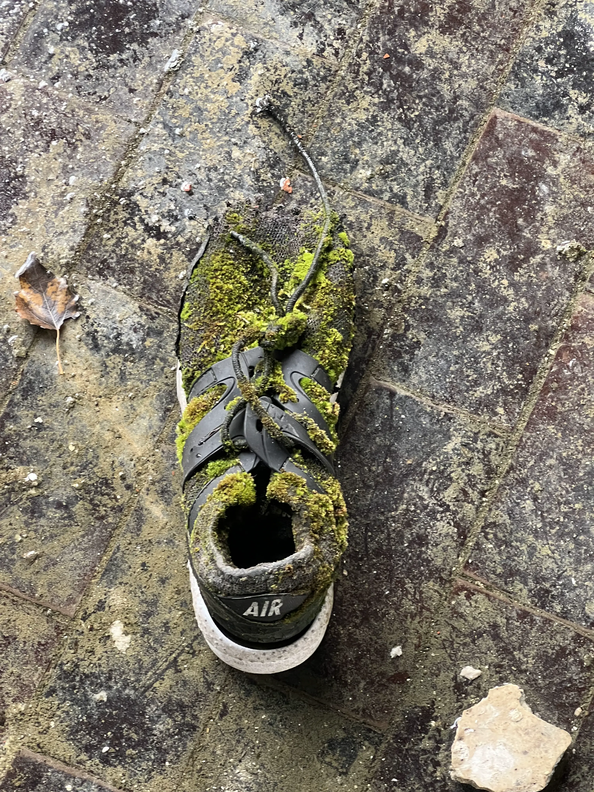

L'Urbex : Entre fascination et dégradation
L'exploration urbaine face à ses dérives
Introduction
Autrefois pratique presque confidentielle, l'urbex a pris beaucoup de vitesse ces dernières années, propulsée par les réseaux sociaux. Derrière les clichés esthétiques de manoirs oubliés et d'usines figées dans le temps se cache une réalité souvent plus sombre: une accélération rapide des dégradations.
Tout d'abord, qu'est-ce que l'urbex ?
L'urbex ou l'exploration urbaine, c'est le fait de visiter des lieux construits par l'homme, mais que celui ci a abandonnés, ces lieux variant d'écoles à usines abandonnées, en passant par des hôpitaux voire même des prisons. L'accès a ces lieux est souvent interdits, en raison du risque aussi bien pour la vie des adeptes de cette activité que pour la conservation des structures en questions.
Les risques encourus
Les risques pour la santé
Commençons par les risques pour les risques pour la santé, les lieux en questions étant par définitions abandonnés, cela signifie qu'il n'y a plus aucune mesure de sécurité en place dans des lieux se dégradant chaque jours de plus en plus. La pratique a fait 4 morts en France en 2024, la plupart de chutes mortels. Mais ce ne sont pas les seuls risques encouru, l'absence d'entretien de ces lieux peut aussi peut aussi exposer les visiteurs a des intoxications a l'amiante, a des gaz toxiques ou même a de l'eau trouble mettant gravement en danger leurs santé.
Les risques pour l'environnement
En plus des risques pour les personnes, cette pratique engendre aussi de gros risques pour l'environnement. La pollution est l'une des conséquences les plus visibles : canettes, bouteilles, emballages ou même de verre laissés sur place par les visiteurs.
Ces déchets le plus souvent non biodégradables polluent le site et défigurent l'esthétique même qui attire les explorateurs.
Malheureusement, cette nuisance s'accentue avec la popularisation de la pratique. Un feu mal éteint, ou encore une cigarette peut suffire à déclencher un incendie, détruisant non seulement le bâtiment mais aussi parfois aussi l'environnement qui l'entoure: forêts, végétation, animaux, rien n'est épargné.

Les conséquences de l'urbex
L'impact sur le patrimoine
Mais c'est peut être sur le patrimoine que l'impact est le plus fort. Ces lieux abandonnés sont des témoins de l'histoire, possédant chacun une valeur historique et culturelle que l'on ne peut estimer.
Pourtant, ils sont souvent la cible de vandalisme par des visiteurs irresponsable, que ca soit des graffitis, vitres brisées ou encore meubles dégradés.
Pourtant, le droit est clair sur le sujet, l'article 322-1 du Code pénal prévoit un maximum de deux ans d'emprisonnement et jusqu'à 30 000 euros d'amende. Mais l'identification des auteurs est très souvent difficile et les coupables sont donc rarement juger pour leurs crimes.
Le vol organisé
Pire encore : le vol. Des vidéos d'urbex filmées dans des châteaux ou des anciennes demeures peuvent servir de catalogue pour des voleurs, révélant la présence d'objets de valeur. En 2018, trois jeunes ont ainsi utilisé une application pour localiser le château de Bellevue en Dordogne et y voler 400 tableaux estimés à 200 000 euros. Les œuvres ont été retrouvées, mais le simple fait que ça arrive illustre une dérive inquiétante.
Les conséquences structurelles
Les conséquences structurelles sont tout aussi préoccupantes. Chaque intrusion, chaque escalade, chaque porte arrachée affaiblit les bâtiments déjà fragiles.
L'humidité, le gel, le vent s'infiltrent alors plus facilement, accélérant la dégradation naturelle. Un bâtiment trop dégradé perd alors toute chance d'être restauré. Plus un site est visité, plus il se dégrade, plus il attire de vandales, jusqu'à sa destruction finale ou sa démolition. C'est un cercle vicieux.
Les causes de cette dérive
Les causes de cette dérive sont multiples. Tout d'abord, les réseaux sociaux. La course au like et au contenu viraux pousse certains à dégrader volontairement les lieux, à déplacer des objets pour faire une mise en scène. Ou alors réaliser des choses de plus en plus risquées. Par exemple, le rooftopping, ou l'accès aux toits, a fait plusieurs victimes, comme un Lyonnais de 18 ans mort en escaladant un pont ferroviaire en 2017, on compte au moins 4 morts de chutes rien que en France en 2024 pendant la pratique de l'urbex, la plupart étant des mineurs.
Ensuite, il y a le manque de conscience. De nombreux nouveaux pratiquants, souvent adolescents, ne mesurent ni les risques physiques ni la valeur patrimoniale des lieux. Pour eux, un bâtiment abandonné est un terrain de jeu sans surveillance ou où tout est permis.
Enfin, la démocratisation de l'information : avant, les bonnes adresses se transmettaient de manière relativement confidentielle par le mot à mot ou sur des forums privés.
Aujourd'hui, des applications et des forums libres d'accès les rendent ces lieux accessibles à tous, provoquant une surfréquentation qui accélère encore les dégradations.
Les chiffres
Les chiffres sont là. En 2024 seulement, on estime environ 50 morts lié a cette pratique en Europe, et un chiffre équivalant aux États-Unis, même si les données ne sont pas vraiment centralisées, ce chiffre est donc à prendre avec un grain de sel, il pourrait être bien pire.
Vers une solution
La solution ne réside pas dans l'interdiction pure et simple, qui s'avérerait impraticable, mais en informant les gens afin qu'il y ait une prise de conscience des dangers. Sensibiliser les jeunes aux dangers réels, renforcer la protection des sites les plus fragiles, promouvoir une éthique de respect. La règle d'or de certains pratiquants de l'urbex est "Leave No Trace", ou ne laisser aucune trace. Car ces lieux abandonnés, bien qu'oubliés, sont souvent des morceaux d'histoire qui méritent mieux que de servir de décor à des quêtes de sensations. Ils méritent d'être préservés, étudiés ou racontés plutôt que détruits.